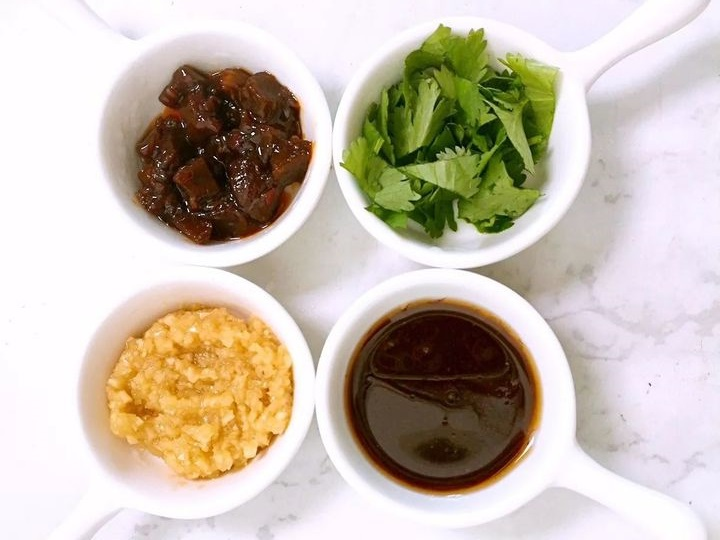
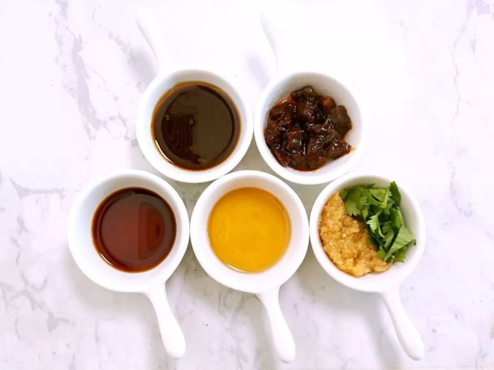

大多数美食都是不同食材组合碰撞产生的裂变性奇观
若以人情世故来看食材的相逢
有的是让人叫绝的天作之和
有的是叫人动容的邂逅偶遇
有的是令人击节的相见恨晚
首页
原料详情
蘸料配方
蘸料推荐
川系火锅蘸料推荐
粤系火锅蘸料推荐
北派火锅蘸料推荐
好吃的火锅
需要优秀的食材
更需要一碗提香增味的好蘸料
Delicious Hot Pot
The need for excellent ingredients
But also a good bowl of Tixiang flavor-enhancing dip
粤 系 火 锅 推 荐 蘸 料
你真的知道粤系火锅最好吃的蘸料配方吗？
粤系火锅以猪肚鸡、小火锅等为代表。博主个人最喜欢潮汕牛肉火锅，为了这一口薄切的黄牛肉和汤底，排队等4个小时都不觉得累。只是吃潮汕牛肉怎么可以没有沙茶酱？

粤系火锅:标配沙茶酱
标配沙茶酱：沙茶酱+香菇酱+蒜蓉+香菜
沙茶酱有虾米、生抽复合的鲜咸味，以及轻微的甜、辣味。香菇滑润，可减少其本身的颗粒感。香菜可根据个人情况添加

粤系火锅:升级沙茶酱
升级沙茶酱：沙茶酱+香菇酱+蒜蓉+香菜+海鲜汁+香油
加了海鲜汁后沙茶酱就有辨识度了，香油和香菇酱相互调和，完全不会腻，恰到好处
subscribe